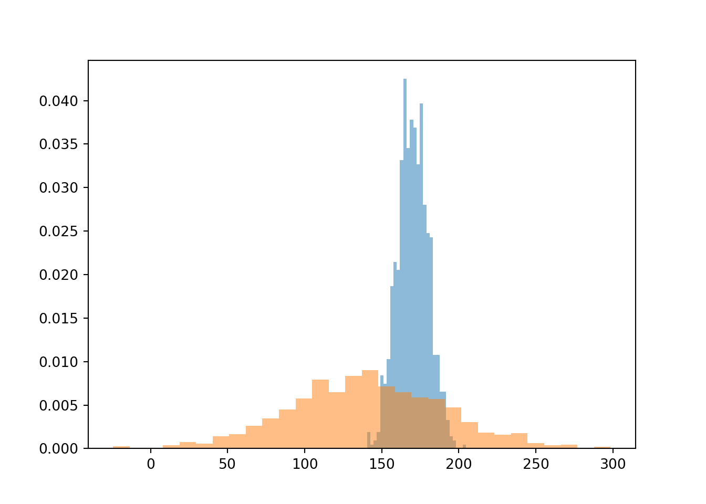

MATH 254 is a second course in statistics with an emphasis on how statistics is used in the real world. Real data are messy, and large data sets have their own issues which are frequently misunderstood. Students will learn to form and test hypotheses and models using a wide class of statistical techniques, and special emphasis will be placed on situations where those techniques fail or are misunderstood. Students will learn to implement their ideas in the statistical programming language R. Topics include bootsrtap methods, randomization, permutation tests, tests, linear and multilinear regression, logistic regression, categorical data analysis, and selected topics in machine learning. Emphasis will be placed on applications of statistics in real world data sets and also interpretation & presentation of results.
In R Studio, you will be writing your labs/reports/exams using Quarto (formerly known as R Markdown) files. These files lets you create report, article, book, blog, website and more and has the ability to combine text with code. Here is a scatterplot example.
Collapse/show the code below
# this is a R example: scatterplot# if you do not have tidyverse package, install it by uncommenting # the line below# install.packages("tidyverse")library(tidyverse)mtcars$am <-factor(mtcars$am, labels =c("Manual", "Auto"))mtcars %>%ggplot(aes(x = hp, y = mpg)) +geom_point(alpha =0.5) +geom_smooth() +facet_wrap(.~am, labeller = label_both) +xlab("Horsepower") +ylab("Mile per gallon")
Here is an example of smoothed histograms (densities).
Collapse/show the code below
library(ggplot2)# Plotmpg %>%ggplot(aes(cty)) +geom_density(aes(fill=factor(cyl)), alpha=0.8) +labs(title="Density plot", subtitle="City Mileage Grouped by Number of cylinders",caption="Source: mpg",x="City Mileage",fill="# Cylinders")
We can also write Python chunks in Quarto.
Collapse/show the code below
# this is a Python example# if you do not have these python pacakges installed, then # turn off eval above# by making eval: falseimport matplotlib.pyplot as pltimport numpy as npnp.random.seed(2022)x = np.random.normal(170, 10, 250)plt.hist(x, 30, density=True, facecolor='g', alpha =0.5);plt.show()

One can even write SQL queries within Quarto.
6 Topics
We have two modules in this class.
6.1 Module - 1 - Classical Statistics
This module covers fundamentals of classical statistics.
R/R Studio/Quarto
Statistics: cases, variables, data-matrices, experiments, numerical and graphical summaries
Sampling distributions, Central Limit Theorem (review)
Hypothesis testing, decision errors, Common statistical tests (z, t) (review)
Bootstrap and randomization
Permutation tests
p-values, dicing and slicing
\(\chi^2\) tests
6.2 Module - 2 - Machine Learning
In this module, we start working with both inference and prediction.
Weekly homework of around 5-7 problems will be assigned on each Monday, and it will be due on Sunday, 10 PM. You will have access to the homework through Blackboard, and you will submit your homework on Gradescope. We have two graders who will grade your work. Lowest HW grade will be dropped.
7.0.2 Labs/Mini Projects (10%)
Weekly lab/mini projectss will be given at the end of Wednesday class (with questions based on the new material we cover in that week. You will be able to work on some of them right away, and you will continue working on it during Friday’s class (the last 20 minutes). You will be working in a group of 2 people and you are allowed to use the book, your notes and R. Deadline for submitting the labs is Friday, 10 pm. No make-up lab will be given. Missed labs are counted as zeros. The lowest lab score will be dropped.
7.0.3 Midterm Test (25%)
There will be single midterm test during the semester. When grading tests, partial credits will be given for answers that are mostly, but not completely correct. These tests will test your understanding of the concepts covered in the class and your ability to solve problems. No make-up tests will be given unless there is a convincing reason which will need to be proved by necessary documentations and which I would be informed about at least one week in advance. You will need to use R during the midterm test.
7.0.4 Project (20%)
At the begining Week of October 11th, you will be assigned to a random group of 2 students to work on a project that will last 4.5 weeks. You will have to choose the dataset yourself from many available resources (links), and start analyzing the data using descriptive statistics first and then applying the techniques you have been learning and that are appropriate your research question. It is essential that your project have a ‘story’. The Consortium for the Advancement of Undergraduate Statistics Education (CAUSE) and the American Statistical Association conduct yearly competetion called Undergarduate Statistics Project Competition (USPROC). Guidelines on how to write a project report will be the same ones from USPROC. USPROC has two seperate competitions: The Undergraduate Class Project Competition (USCLAP) and The Undergraduate Research Project Competition (USRESP). You will focus on the guidelines for USCLAP. A report template is also provided to you at https://www.causeweb.org/usproc/report-template. Here is the list of Fall 2019 project winners and their projects: https://www.causeweb.org/usproc/usclap/2019/fall/winners.Run the data set with me before you start working on the project. Note that you will be working on the project with your team, and I will serve as an advisor/consultant.
7.0.5 Project Checkpoints (5%)
Starting with the week of October 11th, each week that project is not due on, you will submit a draft of your work as a checkpoint for your project during that week, and get some feedback. These are drafts of your project, and show your progress. In other words, the project has 4 checkpoints (October 13 -Wed, October 23-Sat, October 30-Sat, November 6- Sat) before it is finally due on November 10, Wednesday, 10 pm. Checkpoint 1 would have the data set, a draft with a reserach question and evidence of data read into R Studio. Checkpoint 2 would have a draft with the research question, some descriptive analysis and references section started. Checkpoint 3 would have a draft with detailed introduction/background, methods that would be applied and some results. Checkpoint 3 would have some main results, updated methods that applied and discussion. Checkpoint 4 would have everything up to now with detailed references, appendix. Final submission would have everything outlined in https://www.causeweb.org/usproc/report-template
7.0.6 Final Test (30%)
There will be a cumulative final test at the end of the semester. Like midterm tests, when grading the final test, partial credits will be given for answers that are mostly, but not completely correct. These tests will test your understanding of the concepts covered in the class and your ability to solve problems. You will need to use R during the final test.
8 Grade Scale
Plus and minus grades will be given according to the following table in the inserted picture.
9 QSR Center
Assistance to students taking mathematics/stats courses at Hamilton College is provided by the Quantitative and Symbolic Reasoning Center, located in the CJ 303. QSR Center has generous drop-in hours and well-trained tutors. You can get a Peer Tutor to work with you one-on-one at the QSR Center. For more information see https://www.hamilton.edu/academics/centers/qsr.
10 Honor code
All of your work (Homework, Labs, Tests) have to be done according to the honor code. The work you submit for homework, labs, and tests must be your own. For homework you will probably find it beneficial to consult with other students about the material and this kind of conversation and collaboration is encouraged. An examination, however, must be solely the student’s own work. See the website:https://www.hamilton.edu/student-handbook/studentconduct/honor-code.
11 Accommodations for Students with Disabilities
Hamilton College will make reasonable accommodations for students with properly documented disabilities. If you are eligible to receive an accommodation(s) and would like to make a formal request for this course, please discuss it with me as soon as possible. You will need to provide Allen Harrison, Assistant Dean for Accessibility Resources (aharriso@hamilton.edu) with appropriate documentation of your disability.
12 Mental Health Support
There are times that each of us may feel overwhelmed, anxious, or depressed. There are many resources available on campus to help and support you:
Counseling Center (www.hamilton.edu/offices/counselingcenter, 315-859-4340) located at 100 College Hill Road offers individual and group therapy, peer counselors, psychiatric treatment, and a 24-hour hotline. If you need immediate assistance, phoning the Counseling Center and selecting option 2 will connect you with a counselor, 24 hours a day, 7 days a week.
Associate Dean of Students for Student Support, Sarah Solomon (315-859-4463; ssolomon@hamilton.edu)
Associate Dean of Students for Academics, Adam Van Wynsberghe (315-859-4600; avanwyns@hamilton.edu)
Your faculty adviser
Your RA and Area Director in your residence hall
If at any time you feel suicidal or in danger of harming yourself or others, please reach out for support! The Hamilton community cares and is available to help. Campus Safety is available 24/7 for urgent concerns at 315-859-4000.